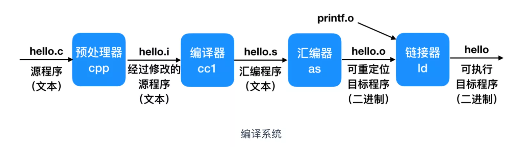

第一章 计算机编程概述
1.2 编译和执行过程
传统上，一个语言（以 c 语言为例）从编写人类可识别的语言到机器可识别的语言要经过如下的步骤。

在过程中由三个特别重要的文件：
- 源文件：人类可识别的语言，比如 c, python, java 等，需要遵循一定的语法规则；
- 汇编语言：汇编语言是一种低级编程语言，它与特定的计算机体系结构（即 CPU 类型，如 x86, ARM, MIPS 等）有着非常直接的对应关系。可以认为它是机器码（计算机能直接执行的二进制指令）的符号化表示。汇编语言是介于机器码和高级语言（如 C, Python, Java 等）之间的一种语言。它比机器码更容易阅读和编写，但比高级语言更接近硬件，抽象程度更低；
- 机器码：机器码是计算机能直接理解和执行的最低级的编程语言。它完全由二进制代码（0 和 1 的序列）组成。每一串特定的二进制代码都对应着 CPU 执行的一个基本操作，例如加载数据、进行算术运算、比较值或跳转到另一个指令地址。机器码是 CPU 能直接理解的二进制指令，是程序的最低层表示；
示例
- 人类识别的高级语言
1
2
3
4
5
6
7
8
9
10
11
12
13
14
15
|
#include <stdio.h>
int add_numbers(int a, int b) {
int c = a + b;
return c;
}
int main() {
int x = 5;
int y = 3;
int sum = add_numbers(x, y);
return sum;
}
|
- 经过编译器处理后的汇报语言
1
2
3
4
5
6
7
8
9
10
11
12
13
14
15
16
17
18
19
20
21
22
23
24
25
26
27
28
29
30
31
32
33
34
35
36
37
38
39
40
41
42
43
44
45
46
47
48
49
50
51
52
53
| .file "add.c"
.text
.globl add_numbers ; 声明 add_numbers 函数是全局的
.type add_numbers, @function
add_numbers: ; add_numbers 函数的开始
.LFB0:
.cfi_startproc ; CFI (Call Frame Information) 开始
pushq %rbp ; 保存栈基址寄存器
.cfi_def_cfa_offset 16
.cfi_offset 6, -16
movq %rsp, %rbp ; 设置新的栈基址
.cfi_def_cfa_register 6
movl %edi, -4(%rbp) ; 将第一个参数 a (在寄存器 edi 中) 存储到栈上的变量空间
movl %esi, -8(%rbp) ; 将第二个参数 b (在寄存器 esi 中) 存储到栈上的变量空间
movl -4(%rbp), %edx ; 将栈上的 a 的值加载到寄存器 edx
movl -8(%rbp), %eax ; 将栈上的 b 的值加载到寄存器 eax
addl %edx, %eax ; 执行加法：eax = eax + edx (即 eax = b + a)
movl %eax, -12(%rbp) ; 将结果 (在 eax 中) 存储到栈上的变量 c 空间
movl -12(%rbp), %eax ; 将栈上的 c 的值加载到 eax (函数返回值通常放在 eax/rax)
popq %rbp ; 恢复栈基址寄存器
.cfi_def_cfa 7, 8
ret ; 函数返回
.cfi_endproc ; CFI 结束
.LFE0:
.size add_numbers, .-add_numbers
.globl main ; 声明 main 函数是全局的
.type main, @function
main: ; main 函数的开始
.LFB1:
.cfi_startproc ; CFI 开始
pushq %rbp ; 保存栈基址寄存器
.cfi_def_cfa_offset 16
.cfi_offset 6, -16
movq %rsp, %rbp ; 设置新的栈基址
.cfi_def_cfa_register 6
subq $16, %rsp ; 在栈上分配一些空间给局部变量 (x, y, sum)
movl $5, -4(%rbp) ; 将整数 5 存储到栈上的 x 变量空间
movl $3, -8(%rbp) ; 将整数 3 存储到栈上的 y 变量空间
movl -4(%rbp), %edx ; 将栈上的 x 的值加载到 edx
movl -8(%rbp), %eax ; 将栈上的 y 的值加载到 eax
movl %edx, %edi ; 将 x (在 edx 中) 移动到 edi 寄存器 (用于传递第一个参数)
movl %eax, %esi ; 将 y (在 eax 中) 移动到 esi 寄存器 (用于传递第二个参数)
call add_numbers ; 调用 add_numbers 函数
movl %eax, -12(%rbp) ; 将 add_numbers 的返回值 (在 eax 中) 存储到栈上的 sum 变量空间
movl -12(%rbp), %eax ; 将栈上的 sum 的值加载到 eax (main 函数的返回值)
leave ; 相当于 movq %rbp, %rsp; popq %rbp
.cfi_def_cfa 7, 8
ret ; main 函数返回
.cfi_endproc ; CFI 结束
.LFE1:
.size main, .-main
.ident "GCC: (GNU) 11.2.0" ; 标识使用了哪个编译器和版本
.section .note.GNU-stack,"",@progbits ; GNU 栈标记
|
- 计算机实际看到的机器语言
1
2
3
4
5
6
7
8
9
10
11
12
13
14
15
16
17
18
19
20
21
22
23
24
25
26
27
28
29
30
31
32
| add.o: file format elf64-x86-64
Disassembly of section .text:
0000000000000000 <add_numbers>:
0: 55 push %rbp
1: 48 89 e5 mov %rsp,%rbp
4: 89 7d fc mov %edi,-0x4(%rbp)
7: 89 75 f8 mov %esi,-0x8(%rbp)
a: 8b 55 fc mov -0x4(%rbp),%edx
d: 8b 45 f8 mov -0x8(%rbp),%eax
10: 01 d0 add %edx,%eax
12: 89 45 ec mov %eax,-0x14(%rbp)
15: 8b 45 ec mov -0x14(%rbp),%eax
18: 5d pop %rbp
19: c3 ret
000000000000001a <main>:
1a: 55 push %rbp
1b: 48 89 e5 mov %rsp,%rbp
1e: 48 83 ec 10 sub $0x10,%rsp
22: c7 45 fc 05 00 00 00 movl $0x5,-0x4(%rbp)
29: c7 45 f8 03 00 00 00 movl $0x3,-0x8(%rbp)
30: 8b 55 fc mov -0x4(%rbp),%edx
33: 8b 45 f8 mov -0x8(%rbp),%eax
36: 89 d7 mov %edx,%edi
38: 89 c6 mov %eax,%esi
3a: e8 c1 ff ff ff call 1a <main+0> ; call add_numbers - link time resolved address
3f: 89 45 f4 mov %eax,-0xc(%rbp)
42: 8b 45 f4 mov -0xc(%rbp),%eax
45: c9 leave
46: c3 ret
|
👉 合并表示为一段机器码（hex）：
1
2
3
4
5
| 55 48 89 E5 89 7D FC 89 75 F8 8B 55 FC 8B 45 F8
01 D0 89 45 EC 8B 45 EC 5D C3 55 48 89 E5 48 83
EC 10 C7 45 FC 05 00 00 00 C7 45 F8 03 00 00 00
8B 55 FC 8B 45 F8 89 D7 89 C6 E8 C1 FF FF FF 89
45 F4 8B 45 F4 C9 C3
|
1.3 计算机中逻辑运算关系
1.3.1 布尔值
在计算机中，布尔值（Boolean values） 是最基础的数据类型之一，表示逻辑上的“真”与“假”。几乎所有程序的条件判断、循环、控制结构、位操作都离不开它。
一、布尔值的基本定义
| 名称 |
英文名 |
值 |
含义 |
| 真 |
True |
通常等于 1 |
条件成立 |
| 假 |
False |
通常等于 0 |
条件不成立 |
在内存中，这两个值分别被表示为：
二、布尔值的来源
布尔值的概念来源于布尔代数（Boolean Algebra），由数学家 George Boole 提出，用于处理“逻辑真假”而非数值大小。
1.3.2 主要逻辑运算对比表（Python vs 数学）
| 逻辑关系 |
数学符号 |
Python符号/关键字 |
中文含义 |
示例（A=True, B=False） |
结果 |
| 与（AND） |
$A \land B$ |
A and B |
两者都为真时为真 |
True and False |
False |
| 或（OR） |
$A \lor B$ |
A or B |
至少一个为真时为真 |
True or False |
True |
| 非（NOT） |
$\lnot A$ |
not A |
对值取反 |
not True |
False |
| 异或（XOR） |
$A \oplus B$ |
A ^ B（位运算） |
一真一假为真 |
True ^ False |
True |
| 同或（XNOR） |
— |
not (A ^ B) |
相同为真 |
not (True ^ True) |
True |
| 与非（NAND） |
$\lnot (A \land B)$ |
not (A and B) |
非全真为真 |
not (True and True) |
False |
| 或非（NOR） |
$\lnot (A \lor B)$ |
not (A or B) |
全假为真 |
not (True or False) |
False |